- 00 学习指南 如何学习这门编译原理实战课？.md.html
- 00 开篇词 在真实世界的编译器中游历.md.html
- 01 编译的全过程都悄悄做了哪些事情？.md.html
- 02 词法分析：用两种方式构造有限自动机.md.html
- 03 语法分析：两个基本功和两种算法思路.md.html
- 04 语义分析：让程序符合语义规则.md.html
- 05 运行时机制：程序如何运行，你有发言权.md.html
- 06 中间代码：不是只有一副面孔.md.html
- 07 代码优化：跟编译器做朋友，让你的代码飞起来.md.html
- 08 代码生成：如何实现机器相关的优化？.md.html
- 09 Java编译器（一）：手写的编译器有什么优势？.md.html
- 10 Java编译器（二）：语法分析之后，还要做些什么？.md.html
- 11 Java编译器（三）：属性分析和数据流分析.md.html
- 12 Java编译器（四）：去除语法糖和生成字节码.md.html
- 13 Java JIT编译器（一）：动手修改Graal编译器.md.html
- 14 Java JIT编译器（二）：Sea of Nodes为何如此强大？.md.html
- 15 Java JIT编译器（三）：探究内联和逃逸分析的算法原理.md.html
- 16 Java JIT编译器（四）：Graal的后端是如何工作的？.md.html
- 17 Python编译器（一）：如何用工具生成编译器？.md.html
- 18 Python编译器（二）：从AST到字节码.md.html
- 19 Python编译器（三）：运行时机制.md.html
- 20 JavaScript编译器（一）：V8的解析和编译过程.md.html
- 21 JavaScript编译器（二）：V8的解释器和优化编译器.md.html
- 22 Julia编译器（一）：如何让动态语言性能很高？.md.html
- 23 Julia编译器（二）：如何利用LLVM的优化和后端功能？.md.html
- 24 Go语言编译器：把它当作教科书吧.md.html
- 25 MySQL编译器（一）：解析一条SQL语句的执行过程.md.html
- 26 MySQL编译器（二）：编译技术如何帮你提升数据库性能？.md.html
- 27 课前导读：学习现代语言设计的正确姿势.md.html
- 28 前端总结：语言设计也有人机工程学.md.html
- 29 中端总结：不遗余力地进行代码优化.md.html
- 30 后端总结：充分发挥硬件的能力.md.html
- 31 运行时（一）：从0到语言级的虚拟化.md.html
- 32 运行时（二）：垃圾收集与语言的特性有关吗？.md.html
- 33 并发中的编译技术（一）：如何从语言层面支持线程？.md.html
- 34 并发中的编译技术（二）：如何从语言层面支持协程？.md.html
- 35 并发中的编译技术（三）：Erlang语言厉害在哪里？.md.html
- 36 高级特性（一）：揭秘元编程的实现机制.md.html
- 37 高级特性（二）：揭秘泛型编程的实现机制.md.html
- 38 综合实现（一）：如何实现面向对象编程？.md.html
- 39 综合实现（二）：如何实现函数式编程？.md.html
- 40 成果检验：方舟编译器的优势在哪里？.md.html
- 不定期加餐1 远程办公，需要你我具备什么样的素质？.md.html
- 不定期加餐2 学习技术的过程，其实是训练心理素质的过程.md.html
- 不定期加餐3 这几年，打动我的两本好书.md.html
- 不定期加餐4 从身边的牛人身上，我学到的一些优秀品质.md.html
- 不定期加餐5 借助实例，探究C++编译器的内部机制.md.html
- 划重点 7种编译器的核心概念与算法.md.html
- 期末答疑与总结 再次审视学习编译原理的作用.md.html
- 热点问题答疑 如何吃透7种真实的编译器？.md.html
- 用户故事 易昊：程序员不止有Bug和加班，还有诗和远方.md.html
- 知识地图 一起来复习编译技术核心概念与算法.md.html
- 结束语 实战是唯一标准！.md.html
- 捐赠
19 Python编译器（三）：运行时机制
你好，我是宫文学。
在前面两讲中，我们已经分析了Python从开始编译到生成字节码的机制。但是，我们对Python只是了解了一半，还有很多问题需要解答。比如：Python字节码是如何运行的呢？它是如何管理程序所用到的数据的？它的类型体系是如何设计的，有什么特点？等等。
所以今天这一讲，我们就来讨论一下Python的运行时机制。其中的核心，是Python对象机制的设计。
我们先来研究一下字节码的运行机制。你会发现，它跟Python的对象机制密切相关。
理解字节码的执行过程
我们用GDB跟踪执行一个简单的示例程序，它只有一行：“a=1”。
这行代码对应的字节码如下。其中，前两行指令实现了“a=1”的功能（后两行是根据Python的规定，在执行完一个模块之后，缺省返回一个None值）。
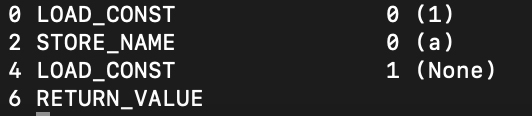
你需要在_PyEval_EvalFrameDefault()函数这里设置一个断点，在这里实际解释指令并执行。
首先是执行第一行指令，LOAD_CONST。
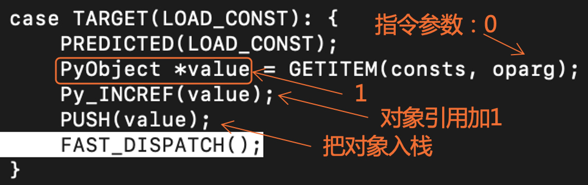
你会看到，解释器做了三件事情：
- 从常数表里取出0号常数。你知道，编译完毕以后会形成PyCodeObject，而在这个对象里会记录所有的常量、符号名称、本地变量等信息。常量1就是从它的常量表中取出来的。
- 把对象引用值加1。对象引用跟垃圾收集机制相关。
- 把这个常数对象入栈。
从这第一行指令的执行过程，你能得到什么信息呢？
第一个信息，常量1在Python内部，它是一个对象。你可以在GDB里显示这个对象的信息：该对象的类型是PyLong_Type型，这是Python的整型在内部的实现。
另外，该对象的引用数是126个，说明这个常量对象其实是被共享的，LOAD_CONST指令会让它的引用数加1。我们用的常数是1，这个值在Python内部也是会经常被用到，所以引用数会这么高。你可以试着选个不那么常见的常数，看看它的引用数是多少，都是在哪里被引用的。
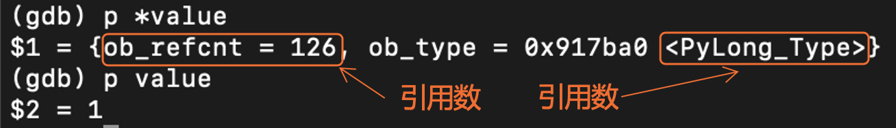
进一步，我们会发现，往栈里放的数据，其实是个对象指针，而不像Java的栈机那样，是放了个整数。
总结上述信息，我其实可以告诉你一个结论：在Python里，程序中的任何符号都是对象，包括整数、浮点数这些基础数据，或者是自定义的类，或者是函数，它们都是对象。在栈机里处理的，是这些对象的引用。
我们再继续往下分析一条指令，也就是STORE_NAME指令，来加深一下对Python运行机制的理解。
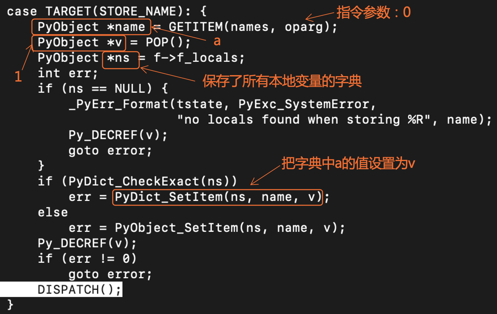
执行STORE_NAME指令时，解释器做了5件事情：
- 根据指令的参数，从名称表里取出变量名称。这个名称表也是来自于PyCodeObject。前面我刚说过了，Python程序中的一切都是对象，那么name也是对象。你可以查看它的类型，是PyUnicode_Type，也就是Unicode的字符串。
- 从栈顶弹出上一步存进去的常量对象。
- 获取保存了所有本地变量的字典，这也是来自PyCodeObject。
- 在字典里，设置a的值为该常量。如果你深入跟踪其执行过程，你会发现在存入字典的时候，name对象和v对象的引用都会加1。这也是可以理解的，因为它们一个作为key，一个作为value，都要被字典所引用。
- 减少常量对象的引用计数。意思是栈机本身不再引用该常量。
好了，通过详细解读这两条指令的执行过程，我相信你对Python的运行机制摸到一点头绪了，但可能还是会提出很多问题来，比如说：
- 既然栈里的操作数都是对象指针，那么如何做加减乘除等算术运算？
- 如果函数也是对象，那么执行函数的过程又是怎样的？
- ……
别着急，我在后面会带你探究清楚这些问题。不过在此之前，我们有必要先加深一下对Python对象的了解。
Python对象的设计
Python的对象定义在object.h中。阅读文件头部的注释和对各类数据结构的定义，你就可以理解Python对象的设计思路。
首先是PyObject和PyVarObject两个基础的数据结构，它们分别表示定长的数据和变长的数据。
typedef struct _object { //定长对象
Py_ssize_t ob_refcnt; //对象引用计数
struct _typeobject *ob_type; //对象类型
} PyObject;
typedef struct { //变长对象
PyObject ob_base;
Py_ssize_t ob_size; //变长部分的项目数量，在申请内存时有确定的值，不再变
} PyVarObject;
PyObject是最基础的结构，所有的对象在Python内部都表示为一个PyObject指针。它里面只包含两个成员：对象引用计数（ob_refcnt）和对象类型（ob_type），你在用GDB跟踪执行时也见过它们。可能你会问，为什么只有这两个成员呢？对象的数据（比如一个整数）保存在哪里？
实际上，任何对象都会在一开头包含PyObject，其他数据都跟在PyObject的后面。比如说，Python3的整数的设计是一个变长对象，会用一到多个32位的段，来表示任意位数的整数：
#define PyObject_VAR_HEAD PyVarObject ob_base;
struct _longobject {
PyObject_VAR_HEAD //PyVarObject
digit ob_digit[1]; //数字段的第一个元素
};
typedef struct _longobject PyLongObject; //整型
它在内存中的布局是这样的：
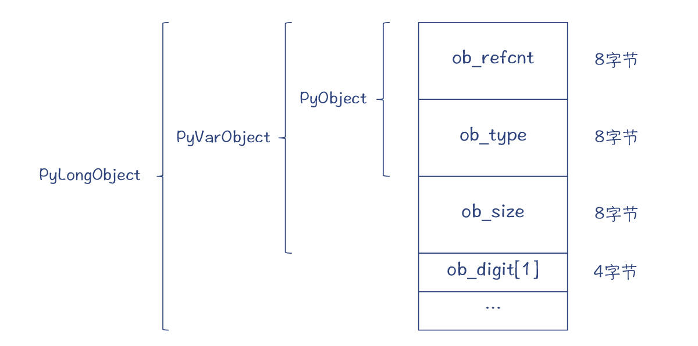
图1：Python3的整数对象的内存布局
所以你会看出，PyObject*、PyVarObject*和PyLongObject*指向的内存地址是相同的。你可以根据ob_type的类型，把PyObject*强制转换成PyLongObject*。
实际上，像C++这样的面向对象语言的内存布局也是如此，父类的成员变量在最前面，子类的成员变量在后面，父类和子类的指针之间可以强制转换。懂得了这个原理，我们用C语言照样可以模拟出面向对象的继承结构出来。
你可以注意到，我在图1中标出了每个字段所占内存的大小，总共是28个字节（这是64位macOS下的数值，如果是另外的环境，比如32位环境，数值会有所不同）。
你可以用sys.getsizeof()函数，来测量对象占据的内存空间。
>>> a = 10
>>> import sys
>>> sys.getsizeof(a)
28 #ob_size = 1
>>> a = 1234567890
>>> sys.getsizeof(a)
32 #ob_size = 2，支持更大的整数
到这里，我们总结一下Python对象设计的三个特点：
1.基于堆
Python对象全部都是在堆里申请的，没有静态申请和在栈里申请的。这跟C、C++和Java这样的静态类型的语言很不一样。
C的结构体和C++的对象都既可以在栈里，也可以在堆里；Java也是一样，除了原生数据类型可以在栈里申请，未逃逸的Java对象的内存也可以在栈里管理，我们在讲Java的JIT编译器的时候已经讲过了。
2.基于引用计数的垃圾收集机制
每个Python对象会保存一个引用计数。也就是说，Python的垃圾收集机制是基于引用计数的。
它的优点是可以实现增量收集，只要引用计数为零就回收，避免出现周期性的暂停；缺点是需要解决循环引用问题，并且要经常修改引用计数（比如在每次赋值和变量超出作用域的时候），开销有点大。
3.唯一ID
每个Python对象都有一个唯一ID，它们在生存期内是不变的。用id()函数就可以获得对象的ID。根据Python的文档，这个ID实际就是对象的内存地址。所以，实际上，你不需要在对象里用一个单独的字段来记录对象ID。这同时也说明，Python对象的地址在整个生命周期内是不会变的，这也符合基于引用计数的垃圾收集算法。对比一下，如果采用“停止和拷贝”的算法，对象在内存中会被移动，地址会发生变化。所以你能看出，ID的算法与垃圾收集算法是环环相扣的。
>>> a = 10
>>> id(a)
140330839057200
接下来，我们看看ob_type这个字段，它指向的是对象的类型。以这个字段为线索，我们就可以牵出Python的整个类型系统的设计。
Python的类型系统
Python是动态类型的语言。它的类型系统的设计相当精巧，Python语言的很多优点，都来自于它的类型系统。我们来看一下。
首先，Python里每个PyObject对象都有一个类型信息。保存类型信息的数据结构是PyTypeObject（定义在Include/cpython/object.h中）。PyTypeObject本身也是一个PyObject，只不过这个对象是用于记录类型信息的而已。它是一个挺大的结构体，包含了对一个类型的各种描述信息，也包含了一些函数的指针，这些函数就是对该类型可以做的操作。可以说，只要你对这个结构体的每个字段的作用都了解清楚了，那么你对Python的类型体系也就了解透彻了。
typedef struct _typeobject {
PyObject_VAR_HEAD
const char *tp_name; /* 用于打印的名称格式是"<模块>.<名称>" */
Py_ssize_t tp_basicsize, tp_itemsize; /* 用于申请内存 */
/* 后面还有很多字段，比如用于支持数值计算、序列、映射等操作的函数，用于描述属性、子类型、文档等内容的字段，等等。 */
...
} PyTypeObject
因为这个结构非常重要，所以我把一些有代表性的字段整理了一下，你可以重点关注它们：
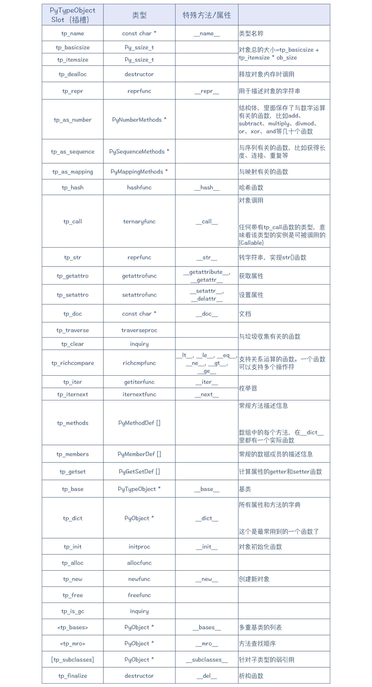
你会看到，这个结构里的很多部分都是一个函数插槽（Slot），你可以往插槽里保存一些函数指针，用来实现各种标准操作，比如对象生命周期管理、转成字符串、获取哈希值等。
在上面的表格中，你还会看到像“__init__”这样的方法，它的两边都是有两个下划线的，也就是“double underscore”，简称dunder方法，也叫做“魔术方法”。在用Python编写自定义的类的时候，你可以实现这些魔术方法，它们就会被缺省的tp_*函数所调用，比如，“__init__”会被缺省的tp_init函数调用，完成类的初始化工作。
现在我们拿整型对象来举个例子，一起来看看它的PyTypeObject是什么样子。
对于整型对象来说，它的ob_type会指向一个PyLong_Type对象。这个对象是在longobject.c中初始化的，它是PyTypeObject的一个实例。从中你会看到一些信息：类型名称是“int”，转字符串的函数是long_to_decimal_string，此外还有比较函数、方法描述、属性描述、构建和析构函数等。
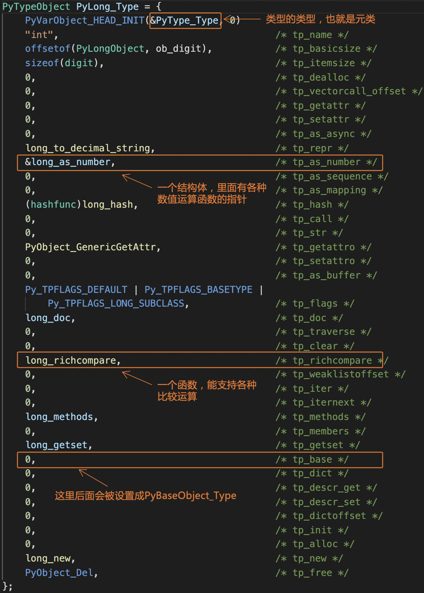
我们运行type()函数，可以获得一个对象的类型名称，这个名称就来自PyTypeObject的tp_name。
>>> a = 10
>>> type(a)
<type 'int'>
我们用dir()函数，可以从PyTypeObject中查询出一个对象所支持的所有属性和方法。比如，下面是查询一个整型对象获得的结果：
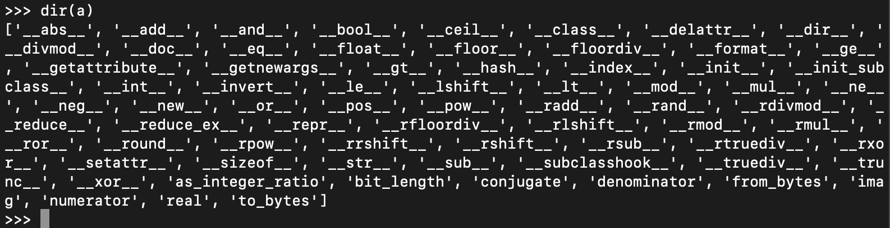
好，我们刚才讲了整型，它对应的PyTypeObject的实例是PyLong_Type。Python里其实还有其他一些内置的类型，它们分别都对应了一个PyTypeObject的实例。你可以参考一下这个表格。
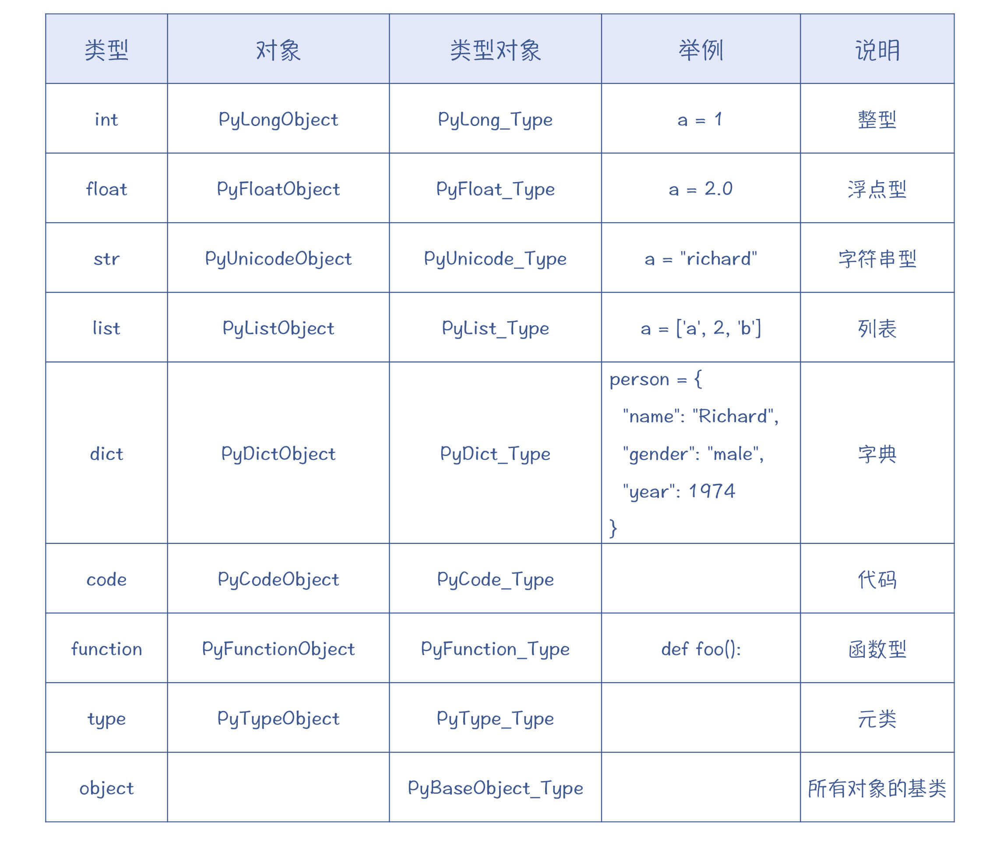
上面列出的这些都是Python的内置类型。有些内置类型跟语法是关联着的，比如说，“a = 1”就会自动创建一个整型对象，“a = [2, 'john', 3]”就会自动创建一个List对象。这些内置对象都是用C语言实现的。
Python比较有优势的一点，是你可以用C语言，像实现内置类型一样实现自己的类型，并拥有很高的性能。
当然，如果性能不是你最重要的考虑因素，那么你也可以用Python来创建新的类型，也就是以class关键字开头的自定义类。class编译以后，也会形成一个PyTypeObject对象，来代表这个类。你为这个类编写的各种属性（比如类名称）和方法，会被存到类型对象中。
好了，现在你已经初步了解了Python的类型系统的特征。接下来，我就带你更深入地了解一下类型对象中一些重要的函数插槽的作用，以及它们所构成的一些协议。
Python对象的一些协议
前面在研究整型对象的时候，你会发现PyLong_Type的tp_as_number字段被赋值了，这是一个结构体（PyNumberMethods），里面是很多与数值计算有关的函数指针，包括加减乘除等。这些函数指针是实现Python的数值计算方面的协议。任何类型，只要提供了这些函数，就可以像整型对象一样进行计算。这实际上是Python定义的一个针对数值计算的协议。
既然如此，我们再次用GDB来跟踪一下Python的执行过程，看看整数的加法是怎么实现的。我们的示例程序增加了一行代码，变成：
a = 1
b = a + 2
它对应的字节码如下：
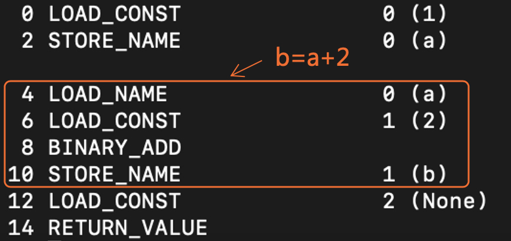
我们重点来关注BINARY_ADD指令的执行情况，如下图所示：
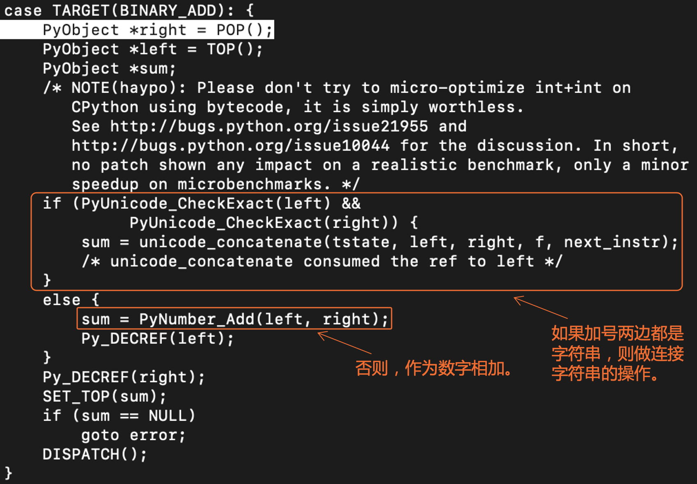
可以看到，如果+号两边是字符串，那么编译器就会执行字符串连接操作。否则，就作为数字相加。
我们继续跟踪进入PyNumber_Add函数。在这个函数中，Python求出了加法函数指针在PyNumberMethods结构体中的偏移量，接着就进入了binary_op1()函数。
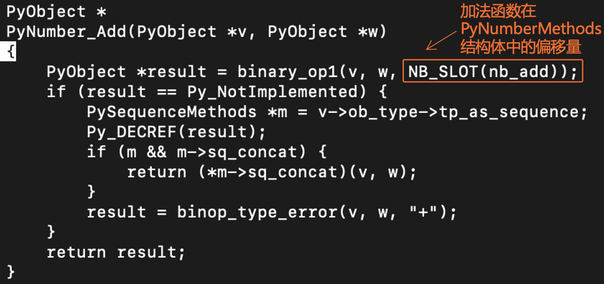
在binary_op1函数中，Python首先从第一个参数的类型对象中，取出了加法函数的指针。你在GDB中打印出输出信息，就会发现它是binaryfunc类型的，函数名称是long_add。
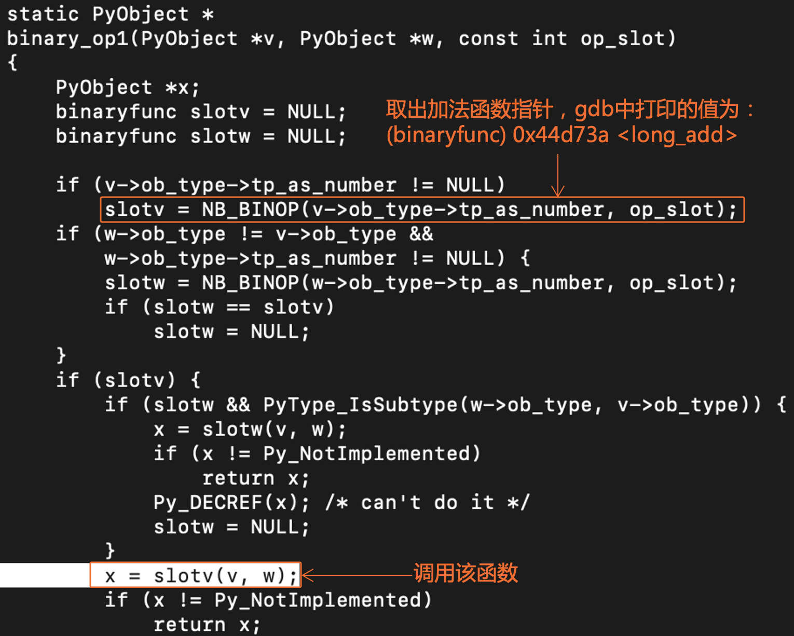
binaryfunc类型的定义是：
typedef PyObject * (*binaryfunc)(PyObject *, PyObject *);
也就是说，它是指向的函数要求有两个Python对象（的指针）作为参数，返回值也是一个Python对象（的指针）。
你再继续跟踪下去，会发现程序就进入到了long_add函数。这个函数是在longobject.c里定义的，是Python整型类型做加法计算的内置函数。
这里有一个隐秘的问题，为什么是使用了第一个参数（也就是加法左边的对象）所关联的加法函数，而不是第二个参数的加法函数？
在我们的示例程序中，由于加法两边的对象的类型是相同的，都是整型，所以它们所关联的加法函数是同一个。但是，如果两边的类型不一样怎么办呢？这个其实是一个很有意思的函数分派问题，你可以先思考一下答案，我会在后面讲Julia的编译器时再回到这个问题上。
好了，现在我们就能理解了，像加减乘除这样运算，它们在Python里都是怎么实现的了。Python是到对象的类型中，去查找针对这些运算的函数来执行。
除了内置的函数，我们也可以自己写这样的函数，并被Python所调用。来看看下面的示例程序，我们定义了一个“__add__”魔术方法。这个方法会被Python作为SimpleComplex的加法函数所使用，实现了加法操作符的重载，从而支持复数的加法操作。
class SimpleComplex(object):
def __init__(self, x, y):
self.x = x
self.y = y
def __str__(self):
return "x: %d, y: %d" % (self.x, self.y)
def __add__(self, other):
return SimpleComplex(self.x + other.x, self.y + other.y)
a = SimpleComplex(1, 2)
b = SimpleComplex(3, 4)
c = a + b
print(c)
那么对于这么一个自定义类，在执行BINARY_ADD指令时会有什么不同呢？通过GDB做跟踪，你会发现几点不同：
首先，在SimpleComplex的type对象中，add函数插槽里放了一个slot_nb_add()函数指针，这个函数会到对象里查找“__add__”函数。因为Python的一切都是对象，因此它找到的是一个函数对象。
所以，接下来，Python需要运行这个函数对象，而不是用C语言写的内置函数。那么怎么运行这个函数对象呢？
这就需要用到Python的另一个协议，Callable协议。这个协议规定，只要为对象的类型中的tp_call属性定义了一个合法的函数，那么该对象就是可被调用的。
对于自定义的函数，Python会设置一个缺省的tp_call函数。这个函数所做的事情，实际上就是找到该函数所编译出来的PyCodeObject，并让解释器执行其中的字节码！
好了，通过上面的示例程序，我们加深了对类型对象的了解，也了解了Python关于数值计算和可调用性（Callable）方面的协议。
Python还有其他几个协议，比如枚举协议和映射协议等，用来支持对象的枚举、把对象加入字典等操作。你可以利用这些协议，充分融入到Python语言的框架中，比如说，你可以重载加减乘除等运算。
接下来，我们再运用Callable协议的知识，来探究一下Python对象的创建机制。
Python对象的创建
用Python语言，我们可以编写class，来支持自定义的类型。我们来看一段示例代码：
class myclass:
def __init__(self, x):
self.x = x
def foo(self, b):
c = self.x + b
return c
a = myclass(2);
其中，myclass(2)是生成了一个myclass对象。
可是，你发现没有，Python创建一个对象实例的方式，其实跟调用一个函数没啥区别（不像Java语言，还需要new关键字）。如果你不知道myclass是一个自定义的类，你会以为只是在调用一个函数而已。
不过，我们前面已经提到了Python的Callable协议。所以，利用这个协议，任何对象只要在其类型中定义了tp_call，那么就都可以被调用。
我再举个例子，加深你对Callable协议的理解。在下面的示例程序中，我定义了一个类型Bar，并创建了一个对象b。
class Bar:
def __call__(self):
print("in __call__: ", self)
b = Bar()
b() #这里会打印对象信息，并显示对象地址
现在，我在b对象后面加一对括号，就可以调用b了！实际执行的就是Bar的“__call__”函数（缺省的tp_call函数会查找“__call__”属性，并调用）。
所以，我们调用myclass()，那一定是因为myclass的类型对象中定义了tp_call。
你还可以把“myclass(2)”这个语句编译成字节码看看，它生成的是CALL_FUNCTION指令，与函数调用没有任何区别。
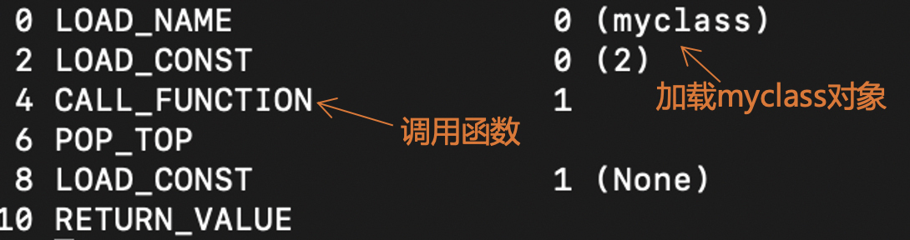
可是，我们知道，示例程序中a的类型对象是myclass，但myclass的类型对象是什么呢？
换句话说，一个普通的对象的类型，是一个类型对象。那么一个类型对象的类型又是什么呢？
答案是元类（metaclass），元类是类型的类型。举例来说，整型的metaclass是PyType_Type。其实，大部分类型的metaclass是PyType_Type。
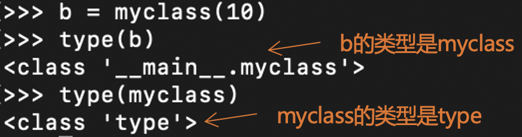
所以说，调用类型来实例化一个对象，就是调用PyType_Type的tp_call函数。那么PyType_Type的tp_call函数都做了些什么事情呢？
这个函数是type_call()，它也是在typeobject.c中定义的。Python以type_call()为入口，会完成创建一个对象的过程：
- 创建
tp_call会调用类型对象的tp_new插槽的函数。对于PyLong_Type来说，它是long_new。
如果我们是创建一个Point对象，如果你为它定义了一个“__new__”函数，那么就将调用这个函数来创建对象，否则，就会查找基类中的tp_new。
- 初始化
tp_call会调用类型对象的tp_init。对于Point这样的自定义类型来说，如果定义了“__init__”函数，就会执行来做初始化。否则，就会调用基类的tp_init。对于PyBaseType_Object来说，这个函数是object_init。
除了自定义的类型，内置类型的对象也可以用类型名称加括号的方式来创建。我还是以整型为例，创建一个整型对象，也可以用“int(10)”这种格式，其中int是类型名称。而且，它的metaclass也是PyType_Type。
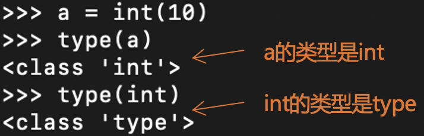
当然，你也可以给你的类型指定另一个metaclass，从而支持不同的对象创建和初始化功能。虽然大部分情况下你不需要这么做，但这种可定制的能力，就为你编写某些特殊的功能（比如元编程）提供了可能性。
好了，现在你已经知道，类型的类型是元类（metaclass），它能为类型的调用提供支持。你可能进一步会问，那么元类的类型又是什么呢？是否还有元元类？直接调用元类又会发生什么呢？
缺省情况下，PyType_Type的类型仍然是PyType_Type，也就是指向它自身。对元类做调用，也一样会启动上面的tp_call()过程。
到目前为止，我们谈论Python中的对象，还没有谈论那些面向对象的传统话题：继承啦、多态啦，等等。这些特性在Python中的实现，仍然只是在类型对象里设置一些字段即可。你可以在tp_base里设定基类（父类）来支持继承，甚至在tp_bases中设置多个基类来支持多重继承。所有对象缺省的基类是object，tp_base指向的是一个PyBaseObject_Type对象。
>>> int.__base__ #查看int类型的基类
<class 'object'>
到目前为止，我们已经对于对象的类型、元类，以及对象之间的继承关系有了比较全面的了解，为了方便你重点复习和回顾，我把它们画成了一张图。
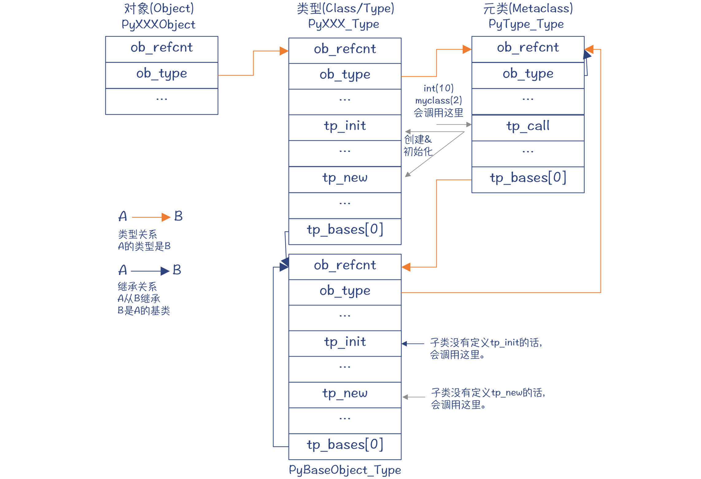
图2：Python对象的类型关系和继承关系
你要注意，图中我用两种颜色的箭头区分了两种关系。一种是橙色箭头，代表的是类型关系，比如PyLong_Type是PyLongObject的类型，而PyType_Type是PyLong_Type的类型；另一种是黑色箭头，代表的是继承关系，比如int的基类是object，所以PyLong_Type的tp_base指向PyBaseObject_Type。
到这里，你可能会觉得有点挑战认知。因为通常我们谈面向对象的体系结构，只会涉及图中的继承关系线，不太会考虑其中的类型关系线。Python的类型关系，体现了“数据即程序”的概念。Java语言里，某个类型对应于一个class的字节码，而在Python里，一个类型只是一个Python对象而已。
并且，在Java里也不会有元类，因为对象的创建和初始化过程都是语言里规定死的。而在Python里，你却拥有一定的掌控能力。
这些特点，都体现了Python类型体系的强大之处。
课程小结
好了，我们来总结一下Python的运行时的特征。你会发现，Python的运行时设计的核心，就是PyObject对象，Python对象所有的特性都是从PyObject的设计中延伸出来的，给人一种精巧的美感。
- Python程序中的符号都是Python对象，栈机中存的也都是Python对象指针。
- 所有对象的头部信息是相同的，而后面的信息可扩展。这就让Python可以用PyObject指针来访问各种对象，这种设计技巧你需要掌握。
- 每个对象都有类型，类型描述信息在一个类型对象里。系统内有内置的类型对象，你也可以通过C语言或Python语言创建新的类型对象，从而支持新的类型。
- 类型对象里有一些字段保存了一些函数指针，用于完成数值计算、比较等功能。这是Python指定的接口协议，符合这些协议的程序可以被无缝集成到Python语言的框架中，比如支持加减乘除运算。
- 函数的运行、对象的创建，都源于Python的Callable协议，也就是在类型对象中制定tp_call函数。面向对象的特性，也是通过在类型对象里建立与基类的链接而实现的。
我照例把本讲的重点知识，整理成了一张思维导图，供你参考和回顾：
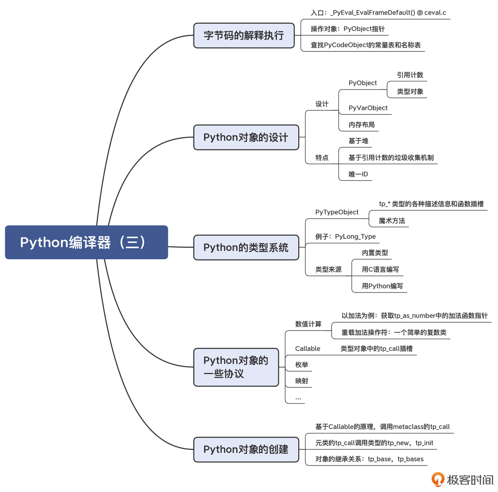
一课一思
今天给你的思考题是很有意思的。
我前面讲到，当Python做加法运算的时候，如果对象类型相同，那么只有一个加法函数可选。但如果两边的对象类型是不同的，该怎么办呢？你可以看看Python是怎么实现的。这其实是编译技术的一个关注点，我们在后面课程中还会提及这个问题。
参考资料
Python的内置类型。
© 2019 - 2023 Liangliang Lee. Powered by gin and hexo-theme-book.